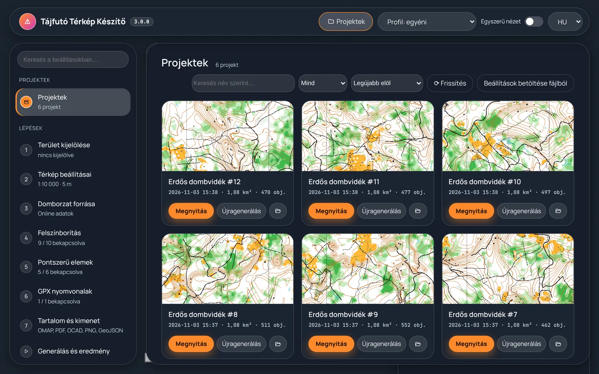
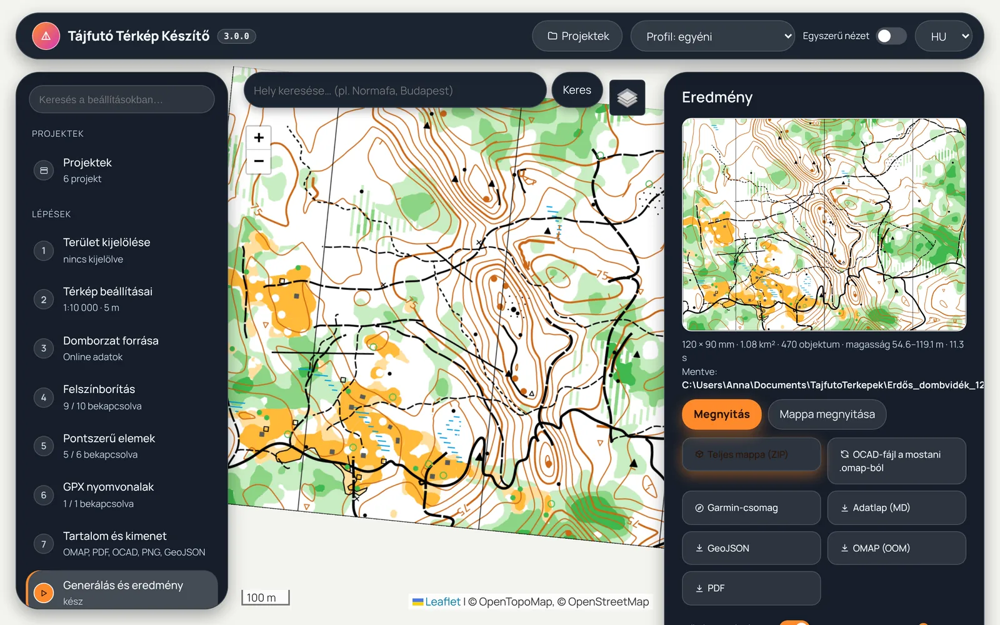
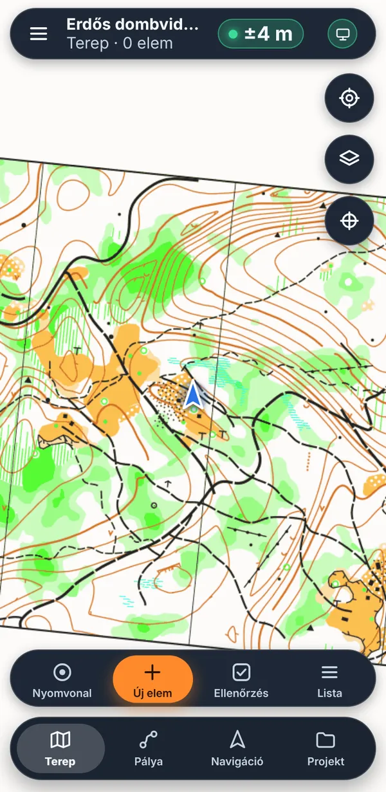
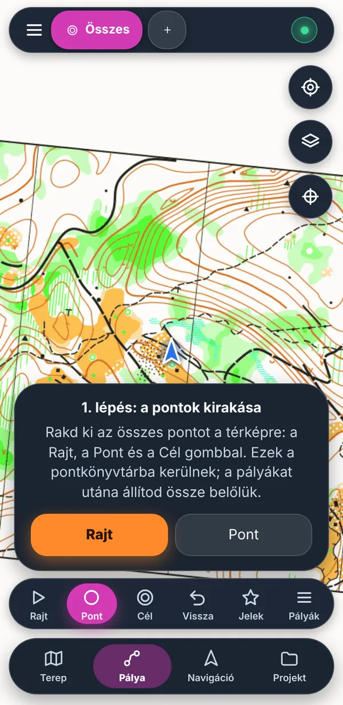
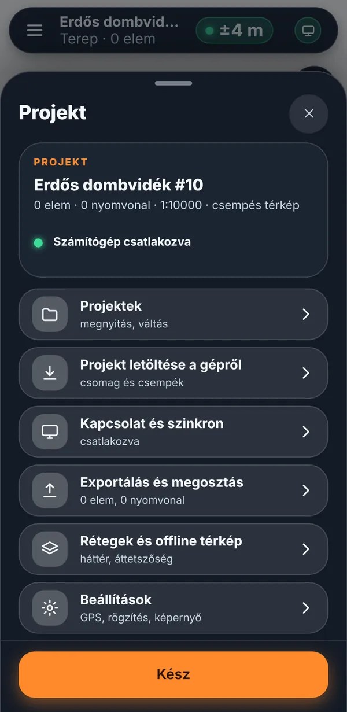

Kijelölsz egy területet, és a program ISOM 2017-2 / ISSprOM 2019 szerinti, szerkeszthető térképet készít (OpenOrienteering Mapper .omap, OCAD .ocd, PDF). A terepbejáráshoz és a pályatervezéshez ott a „Tájfutó Terep” Android-app. Select an area and the program builds an editable ISOM 2017-2 / ISSprOM 2019 map (OpenOrienteering Mapper .omap, OCAD .ocd, PDF). For field checking and course setting there is the “Tájfutó Terep” Android app.
A teljes térképkészítő program. Telepítő, rendszergazdai jog nélkül; frissítéskor a régi változat megmarad.The full map-making program. Installer, no admin rights needed; the previous version is kept on update.
Letöltés WindowsraDownload for WindowsTerepbejárás GPS-szel, offline térkép, pályatervezés a Purple Pen menetével, szinkron a géppel Wi-Fin.Field survey with GPS, offline map, Purple Pen-style course setting, sync with the computer over Wi-Fi.
APK letöltéseDownload the APKMinden változat és az ellenőrző összegek:All versions and checksums: GitHub Releases
A feldolgozás teljesen a helyi gépen fut; a nyílt adatokat (domborzat, OpenStreetMap, műholdképek) a program maga tölti le.Processing runs entirely on your computer; the program downloads the open data (elevation, OpenStreetMap, satellite imagery) itself.





Pár perc. Internet csak a térképadatok letöltéséhez kell.A few minutes. Internet is only needed to download map data.
Get-FileHash .\TajfutoTerkep-Setup.exe -Algorithm SHA256 –
az eredménynek egyeznie kell ezzel:the result must match:
…
Az APK-é:The APK's: …
Windows: a Start menüben „Tájfutó Térkép Készítő – visszaállítás az előző változatra” (a telepítő az utolsó két változatot megőrzi). Régebbi változat: a GitHub Releases oldalról tölthető le, a telepítője a mostani fölé fut.
Android: a régebbi APK a Releases oldalról; a telefon csak akkor engedi a régebbit telepíteni, ha előbb eltávolítod az appot (a telefonon tárolt, még nem szinkronizált adatokat előtte küldd át a gépre).
Windows: in the Start menu “Tájfutó Térkép Készítő – restore the previous version” (the installer keeps the last two versions). Older versions: download from GitHub Releases and run the installer over the current one.
Android: older APKs are on the Releases page; the phone only installs an older one after you uninstall the app (sync any unsent data to the computer first).
Windows 10 vagy 11 (64 bites), legalább 8 GB memória (nagy területhez 16 GB), 5 GB szabad lemez. Android 7 vagy újabb. Az asztali ablakhoz a Microsoft Edge WebView2 kell – a Windows 10/11-en általában fent van.
Windows 10 or 11 (64-bit), at least 8 GB RAM (16 GB for large areas), 5 GB free disk. Android 7 or newer. The desktop window needs Microsoft Edge WebView2 – usually already installed on Windows 10/11.
A változások listája magyarul (a programban is: Névjegy → Újdonságok).The change list is in Hungarian (also in the program: About → What's new).
…
| OpenStreetMap | © OpenStreetMap-közreműködők / contributors, ODbL 1.0 – openstreetmap.org/copyright |
| Copernicus GLO-30 DEM | © DLR e.V. 2010–2014, © Airbus Defence and Space GmbH 2014–2018, Copernicus program (ESA) |
| Lechner DEM25 | Lechner Tudásközpont, CC BY 4.0 |
| BEV ALS-DTM (AT) | © BEV – Bundesamt für Eich- und Vermessungswesen, CC BY 4.0 |
| ČÚZK DMR 5G (CZ) | © ČÚZK, CC BY 4.0 |
| ARSO LiDAR, GURS (SI) | © ARSO, GURS – Republika Slovenija, CC BY 4.0 |
| GEDTM30 | OpenLandMap / OpenGeoHub, CC BY 4.0 |
| AWS Terrain Tiles | Mapzen / Linux Foundation; SRTM, GMTED, ETOPO1 stb. – attribution |
| Lechner HNHRL, ortofotó | Lechner Tudásközpont (Copernicus HRL-alapú felszínborítás; ortofotó a szolgáltatás feltételei szerint) |
| basemap.at | © basemap.at, CC BY 4.0 |
| ESA WorldCover, Sentinel-2 | © ESA WorldCover project / Copernicus Sentinel data, CC BY 4.0 |
| Meta / WRI canopy height | Meta & World Resources Institute, CC BY 4.0 |
| Purple Pen | IOF-leírásjelek / description symbols – BSD 3-Clause |
| Leaflet | BSD 2-Clause |
| JSZip | MIT |
| Capacitor | MIT |
| Python | Flask (BSD-3), NumPy, SciPy, scikit-image (BSD-3), Shapely (BSD-3), pyproj (MIT), rasterio (BSD-3) + GDAL (MIT), Pillow (MIT-CMU), matplotlib (PSF-based), pywebview (BSD-3), laspy (BSD-2), ezdxf (MIT), segno (BSD-3), waitress (ZPL 2.1) |
| Karttapullautin | GPL-3.0 (külön program, a mellékelt eszközök között / bundled separate tool) |
A teljes lista a programban: Névjegy → Licencek, és a telepített mappában: LICENCEK.txt.Full list in the program: About → Licences, and in the installed folder: LICENCEK.txt.